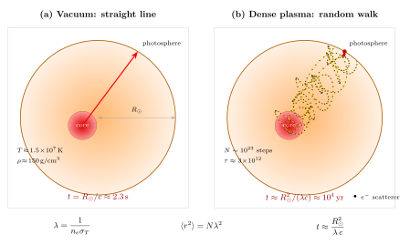

光子从太阳核心走到表面要多久?
上一节我们从地面热量计算出太阳常数 $S\approx 1361$ W/m², 再往回追一步得到太阳表面温度约 $5780$ K. 整段推理背后藏着一个被日常经验默许的前提: 阳光几乎是"立即"到达的. 严格一点说, 从太阳表面(光球层)到地球, 光走 1 天文单位需要 $1.496\times 10^{11}\,\text{m}/c\approx 499\,\text{s}\approx 8$ 分 20 秒. 八分钟听起来也短, 足以让我们把日出日落当作实时事件来体验.
但是现在换一个问题: 照在脸上的这束阳光, 它所携带的能量是怎么产生的? 答案是太阳核心的核聚变 — pp 链把四个质子压成一个氦核, 释放出约 26 MeV 能量. 那么, 核反应产生的那个高能光子, 从太阳中心跑到表面, 用了多久? 直觉会把这段距离等价于"真空走一段 $R_\odot$ 长的路", 答案是 $R_\odot/c\approx 2.3$ 秒. 可是这个直觉在这里完全错了. 正确答案是: 大约一万年, 甚至更长. 一万年前做出来的光子, 才正好能从太阳中心挪到表面, 再用八分钟跑到你眼睛里.
这十一个数量级的差距不是科幻想象, 它来自一条非常干净的物理: 稠密等离子体里的光学深度极大, 光子必须以随机游走的方式缓慢扩散. 这一节我们就从 Thomson 散射出发, 把"一万年"这个数算清楚, 并顺势引入光学深度与辐射扩散的概念 — 它们是后面讲黑体辐射、讲恒星谱形、讲星际消光时反复用到的语言.
一、太阳核心: 一锅被全部电离的电子汤
首先要弄清楚光子穿过的是什么介质. 太阳核心的状态可以用几个数字刻画: 温度 $T_c\approx 1.5\times 10^7$ K, 质量密度 $\rho_c\approx 150$ g/cm³ (比金还重十几倍), 化学成分以氢为主、其次氦. 一个氢原子的电离能只有 13.6 eV, 而核心热运动的典型能量 $k_B T_c\approx 1.3$ keV, 比电离能高两个数量级, 因此氢完全电离, 氦也几乎完全电离. 核心实际上是一锅裸露的质子、α 粒子与自由电子混合在一起的等离子体.
粒子数密度可以估算. 质子质量 $m_p\approx 1.67\times 10^{-27}$ kg. 若把核心近似看作纯氢, 则电子数密度等于质子数密度, 两者加起来的质量密度是 $\rho_c\approx 2 m_p n_e$. 于是
$$n_e \approx \frac{\rho_c}{2 m_p}\approx \frac{1.5\times 10^5\,\text{kg/m}^3}{2\times 1.67\times 10^{-27}\,\text{kg}}\approx 4.5\times 10^{31}\,\text{m}^{-3}.$$
考虑到有一部分是氦, 实际电子密度略高一点, 文献上常见的核心值在 $n_e\sim 6\times 10^{31}\,\text{m}^{-3}$ 量级. 量级就好. 关键在于: 这里每立方米有 $\sim 10^{32}$ 个自由电子, 比标准大气中每立方米的分子数 $2.5\times 10^{25}$ 还多七个量级. 光子想在这样的环境里走直线, 几乎是不可能的.
它为什么会被散射? 光(电磁波)一进到等离子体里, 电场会摇动自由电子; 电子加速就辐射新波; 新波又与原波叠加, 效果就是入射光子被"重新取向". 从粒子语言讲, 光子与电子发生弹性散射, 这就是 Thomson 散射. 它的截面在低能极限 ($\hbar\omega\ll m_e c^2$) 下是一个纯经典量
$$\sigma_T = \frac{8\pi}{3}r_e^2 = \frac{8\pi}{3}\left(\frac{e^2}{4\pi\epsilon_0 m_e c^2}\right)^2\approx 6.65\times 10^{-29}\,\text{m}^2,$$
其中 $r_e\approx 2.82\times 10^{-15}$ m 是经典电子半径. 注意 $\sigma_T$ 不依赖波长, 对可见到软 X 光这个宽范围都适用 — 正是太阳内部辐射场所在的频段. 如果光子能量可以与 $m_e c^2=511$ keV 比较, 需要换成 Compton 截面, 但在太阳内部绝大部分区域用 Thomson 近似已经够准.
二、平均自由程: 光子在核心能走几毫米
光子在充满散射体的介质里走, 两次散射之间的平均距离就是平均自由程 (mean free path, MFP). 设散射体密度 $n_e$, 每个的截面 $\sigma_T$, 那么光子在长度 $dL$ 里被散射的概率是 $n_e\sigma_T\,dL$. 这是一个泊松过程, 走到距离 $L$ 还没散射的概率是 $e^{-n_e\sigma_T L}$. MFP 自然就是这个指数衰减的尺度
\begin{equation} \lambda \;=\; \frac{1}{n_e\sigma_T}. \end{equation}
代入数字: $n_e\approx 6\times 10^{31}$ m⁻³, $\sigma_T\approx 6.65\times 10^{-29}$ m², 于是
$$\lambda \approx \frac{1}{6\times 10^{31}\times 6.65\times 10^{-29}}\approx \frac{1}{4.0\times 10^{3}}\,\text{m}\approx 2.5\times 10^{-4}\,\text{m}\approx 0.25\,\text{mm}.$$
核心深处的光子, 走不到一毫米就要被散射一次, 方向随即被擦除. 如果你把单独一个光子在这里的运动放慢来看, 它就像在迷雾中的人: 每走半毫米左右就撞到一个电子, 然后改变方向继续走, 但"继续走"的方向是随机的, 没有记忆.
当然太阳内部并不是处处密度一样, 从核心向外密度和温度都在下降, $\lambda$ 在外部辐射区会增大到厘米甚至更大. 除了 Thomson 散射, 还有束缚电子的吸收、自由-自由吸收等其他机制在较低温度下起作用. 用平均 Rosseland 不透明度 $\kappa_R$ 描述综合效应, $\lambda = 1/(\kappa_R\rho)$. 不过就数量级而言, 把全程都用一个 $\lambda\sim$ 几毫米的代表值来估算, 跟更精细的恒星结构模型给出的答案差不了多少, 我们下一节就看看这个估算.
三、随机游走: 为什么 $N\sim (R/\lambda)^2$ 而不是 $R/\lambda$
假设光子每走一步长度 $\lambda$, 方向各向同性随机. 把第 $i$ 步的位移向量记为 $\vec{s}_i$, $|\vec{s}_i|=\lambda$, $\langle \vec{s}_i\rangle=0$, 并且不同步之间独立. 走完 $N$ 步的总位移
$$\vec{R}_N = \sum_{i=1}^{N}\vec{s}_i.$$
它的均方长度是
$$\langle |\vec{R}_N|^2\rangle = \sum_{i,j}\langle \vec{s}_i\cdot\vec{s}_j\rangle = \sum_i \langle |\vec{s}_i|^2\rangle = N\lambda^2,$$
交叉项因独立而归零. 典型位移 $\sim \sqrt{N}\,\lambda$, 要让这个等于太阳半径 $R_\odot$, 需要
\begin{equation} N \;\approx\; \left(\frac{R_\odot}{\lambda}\right)^2. \end{equation}
这一步非常反直觉却是全部论证的核心: 如果光子在介质中是直线传播, 到达距离 $R$ 需要 $R/\lambda$ 步; 因为它是随机游走, 需要 $(R/\lambda)^2$ 步, 多走的那个 $R/\lambda$ 倍, 就是"迷路"的代价. 每一步都花时间 $\lambda/c$, 把两者乘起来
$$t_\text{escape} \;\approx\; N\cdot\frac{\lambda}{c} \;\approx\; \left(\frac{R_\odot}{\lambda}\right)^2\cdot\frac{\lambda}{c} \;=\; \frac{R_\odot^2}{\lambda c} \;=\; \frac{R_\odot}{c}\cdot\frac{R_\odot}{\lambda}.$$
最右边的写法很有启发性: 结果等于"真空穿越时间" $R_\odot/c$ 乘以"光学深度" $R_\odot/\lambda$. 光学深度(optical depth) 定义为 $\tau=R/\lambda=n_e\sigma_T R$, 对太阳来说 $\tau\approx 7\times 10^8/2.5\times 10^{-4}\approx 3\times 10^{12}$. 所以光子逃出的时间比它走直线多了 $\tau$ 倍; 而它走过的总路程则比 $R_\odot$ 多了 $\tau$ 倍, 即 $\sim 2\times 10^{21}$ m, 约 $2\times 10^5$ 光年 — 如果把这团折线拉直, 够穿越银河系两倍.

四、代入数字: 一万年这个数从哪里来
把上面的公式照直代入. 取 $R_\odot\approx 7\times 10^8$ m, $\lambda\approx 5\times 10^{-3}$ m (介于核心的 0.25 mm 与外部辐射区的 cm 之间, 作为全程的等效均值; 这是一个近似, 但对数量级结论稳健), $c\approx 3\times 10^8$ m/s.
步数:
$$N = \left(\frac{R_\odot}{\lambda}\right)^2 = \left(\frac{7\times 10^8}{5\times 10^{-3}}\right)^2 = (1.4\times 10^{11})^2 \approx 2\times 10^{22}.$$
时间:
$$t = \frac{R_\odot^2}{\lambda c} = \frac{(7\times 10^8)^2}{5\times 10^{-3}\times 3\times 10^8} = \frac{4.9\times 10^{17}}{1.5\times 10^{6}}\,\text{s}\approx 3.3\times 10^{11}\,\text{s}.$$
换成年: $1\,\text{yr}\approx 3.15\times 10^7$ s, 于是 $t\approx 1.0\times 10^4$ 年. 量级稳定在一万年.
如果用更细的 $\lambda$ 取值 (如核心的 0.25 mm 作为下界), 估算会给出 $t\sim 10^5\sim 10^6$ 年; 如果用恒星结构的精细数值积分 (考虑不同壳层 $\rho, T, \kappa$ 的变化), 现代模型的主流结果大致在 $10^4\sim 10^5$ 年之间. 因此我们可以负责任地说: 光子从核心扩散到表面需要的时间, 大约是一万到几十万年. 具体到哪个数字, 取决于你对不透明度 $\kappa_R$ 的处理细节, 但量级不会变. 这个结论一旦接受, 就带来一个哲学级别的图像: 今天照在你手背上的阳光, 它的能量是大约一万年前在太阳核心由核聚变释放的; 那时地球上的人类刚从冰期走出, 还没学会种小麦. 能量走了一万年才到光球, 再花八分钟过 1 AU 到你身上.
五、极限检验与历史连接
做一个极限检验. 如果散射体密度 $n_e\to 0$, MFP $\lambda\to\infty$, 随机游走退化为直线传播: $t= R^2/(\lambda c)\to 0$ 并不对, 因为公式在 $\lambda\gt R$ 时已经失效 — 这时候一步就跑出了介质, 不再是随机游走. 正确的极限是: 当 $\lambda\gtrsim R$ 时, 光子在经过的短时间 $R/c$ 内平均只散射一次或零次, 传播近似直线, $t\approx R/c$. 所以公式 $t= R^2/(\lambda c)$ 的适用条件是 $\lambda\ll R$ (光学厚), 而真空极限是 $\lambda\gg R$ (光学薄). 两个极限之间, 光学深度 $\tau=R/\lambda$ 从大到小过渡, 穿越时间从 $R^2/(\lambda c)$ 平滑过渡到 $R/c$.
再看另一个极限: 如果把 Thomson 截面 $\sigma_T$ 换成 Compton 公式 (光子能量 $\hbar\omega$ 接近 $m_e c^2$), 截面减小, $\lambda$ 增大, 穿越时间相应减小. 太阳核心刚诞生的 $\gamma$ 光子能量约几 MeV, 比 $m_e c^2=0.511$ MeV 大, Compton 修正确实让早期散射的截面偏小; 但光子很快通过 Compton 散射把能量分给电子, 先降到 X 光再降到紫外, 之后就完全是 Thomson 区了. 所以用 $\sigma_T$ 作为全程代表不会错太多. 反过来, 如果我们做一个"极大截面"的极限 — 把 $\sigma$ 加到 $10^{-20}$ m² (比如中微子与物质的相互作用截面远小于此, 但若反过来假设), MFP 会短到亚原子尺度, 光子寸步难行, 扩散时间会长到宇宙寿命以上. 正是因为 Thomson 截面正好处在那个"几毫米 MFP"的位置, 太阳才能既足够不透明地把能量装在内部慢慢泄, 又不至于彻底锁死 — 我们见到的稳定太阳, 就依赖这个数的精巧平衡.
历史上, 辐射在恒星内部以扩散方式传播的图像, 最早由 Karl Schwarzschild 1906 年在他关于太阳大气辐射平衡的工作里写下. Schwarzschild 那时刚结束他的天文台博士课题没几年, 后来在一战战壕里的 1915 年, 他写信给 Einstein 给出广义相对论第一个精确解 (Schwarzschild 度规). 他 1906 年关于恒星辐射输运的论文用到了一个很好的近似: 把辐射场视作局部接近热力学平衡的黑体场, 加上一个小的向外梯度, 得到能流 $F=-\frac{c}{3}\frac{d(aT^4)}{d\tau}$, 这就是著名的 Schwarzschild 方程, 或者叫辐射扩散方程. 它本质上就是我们写的 $t\sim R^2/(\lambda c)$ — 所有扩散过程的方程都长得一个样.
1920 年代, Arthur Eddington 把 Schwarzschild 的方法系统地应用到整颗恒星, 1926 年写成《恒星内部构造》(The Internal Constitution of the Stars). Eddington 第一次把"辐射压"与"气体压"放到一起, 推导了恒星的质光关系, 也让"光子扩散时间尺度决定恒星内部的热平衡"成为天体物理的默认图像. 当后来的人问"太阳为什么这么稳?", 答案的一半就藏在这里: 正因为光子逃逸要花上万年, 核心的任何小波动都会在这个长时间尺度上被抹平, 恒星呈现出极稳的能量输出. 那 $S\approx 1361$ W/m² 在人类历史尺度上几乎不变, 背后是光子的"万年慢旅".
小结
把光看成粒子, 放进稠密等离子体, 它就不再是直线飞行的光束, 而是以 Thomson 截面反复散射、做三维随机游走的扩散体. 由 $\lambda=1/(n_e\sigma_T)$ 与 $\langle r^2\rangle=N\lambda^2$ 两条简单关系, 我们推出穿越时间 $t\approx R^2/(\lambda c)$; 对太阳代入得到一万年量级的结果, 与"真空中 2.3 秒"形成 $10^{11}$ 倍的落差. 这正是"光是什么"这个追问在恒星内部的回答: 在介质里, 光的身份更像是一种缓慢扩散的能量场, 而不是几何光学的直线. 下一节我们跨过光球, 问另一个相关的问题 — 当这些光子终于在表面重新聚成黑体谱时, 为什么谱形只取决于一个温度? 那就是普朗克的故事.
▲